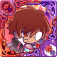

Hello and welcome to my corner of the Internet. I've always been interested in creating a website for myself, but it didn't become reality until one day, in a feverish attempt to procrastinate on an assignment, I coded a basic outline with my first ever flexbox attempt. The results are the site you see before you.
At the time of writing, I am a psychology student on my bachelors of science degree and I'm planning on attending grad school for my master's degree. My areas of interest include sociopsychology, technology and psychology, and abnormal psychology with a concentration on dissociative identity disorders.
I live with an undiagnosed dissociative disorder, and while we're rather secretive about our identities, perhaps they'll show up at some point...? Some parts have expressed interest in coding their own pages!
When I'm not working on school-related things, I'm usually playing video games, especially mobile rhythm games, drawing, or reading.
My favorite video game franchise overall is the Puyo Puyo series and Puyo Puyo Fever 2 is my favorite game of all time.
I'm otherkin and happily proud of that fact. I love talking about my kintypes, so here's a few I'm comfortable sharing down below!

Box background is "Rice Paper 2 Pattern" from toptal.